Aplikacija Završni i diplomski radovi je mjesto na kojem se odvija cijela komunikacija oko izrade Vašeg završnog ili diplomskog rada s mentorom. U njoj možete:
Uz svaku važnu promjenu (npr. zadana tema, promjena statusa, povratna informacija, novi materijal) dobit ćete obavijest emailom na svoju @unipu.hr adresu.
Tema se i dalje službeno prijavljuje u Studomatu (izbornik „Završetak studija”), a mentor je unosi u Nastavnički portal. Aplikacija Vas vodi kroz te korake i olakšava komunikaciju, ali službenu prijavu morate napraviti i u Studomatu.
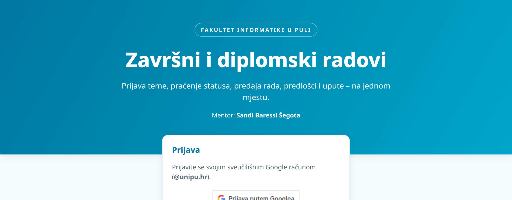
Ako Vas mentor još nije dodao, račun se stvara automatski pri prvoj prijavi, sa statusom Inicijalni kontakt, a mentor dobiva obavijest. Ništa posebno ne morate napraviti.
Prijava ostaje aktivna 7 dana na tom pregledniku. Za odjavu kliknite Odjava u gornjem desnom kutu – to je posebno važno na javnim/dijeljenim računalima.
Na vrhu stranice vidite vrstu rada, naslov teme i trenutni status. Ispod se nalaze četiri kartice:
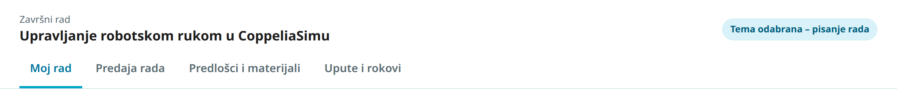
| Kartica | Što sadrži |
|---|---|
| Moj rad | Status rada (vremenska crta), tema (HR/EN), prijedlog teme, potvrda odabira teme, Vaši podaci (JMBAG, željeni datum obrane) i poruka mentora. |
| Predaja rada | Učitavanje datoteka na pregled ili konačne verzije te popis svih predaja s povratnim informacijama mentora. |
| Predlošci i materijali | Službeni predlošci rada i prezentacije te materijali koje je mentor dodao svima ili samo Vama. |
| Upute i rokovi | Opis procesa, upute za prijavu teme, pisanje i obranu te popis rokova. |
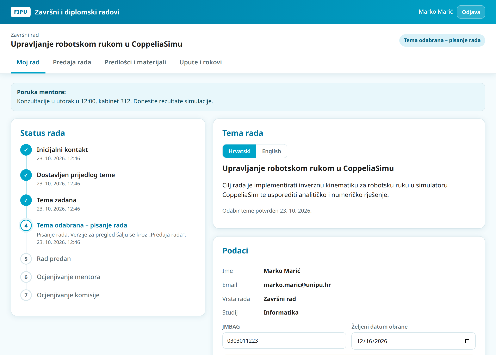
Ako Vam mentor ostavi poruku (npr. termin konzultacija), ona se prikazuje u plavom okviru na vrhu kartice Moj rad.
Sučelje se prilagođava manjim zaslonima – sve funkcije rade i na mobitelu.
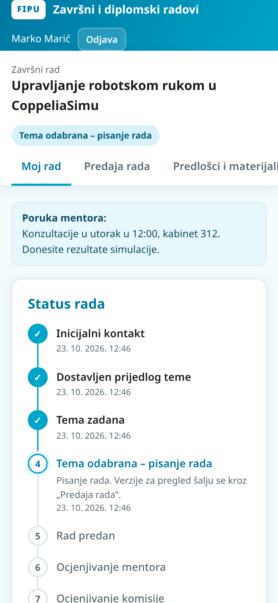
Vaš rad uvijek ima jedan od sedam statusa. Neke statuse mijenjate Vi svojom akcijom u aplikaciji, a neke mentor.
| Status | Što znači | Tko je sljedeći na potezu |
|---|---|---|
| Inicijalni kontakt | Javili ste se mentoru / dodani ste u aplikaciju. | Vi – pošaljite prijedlog teme. |
| Dostavljen prijedlog teme | Prijedlog je poslan. | Mentor – pregledava i zadaje temu. |
| Tema zadana | Mentor je zadao konačni naslov i opis te temu unio u Nastavnički portal. | Vi – odaberite temu u Studomatu i potvrdite u aplikaciji. |
| Tema odabrana – pisanje rada | Pišete rad. | Vi – šaljite verzije na pregled, na kraju konačnu verziju. |
| Rad predan | Predali ste konačnu verziju. | Mentor – pregledava. |
| Ocjenjivanje mentora | Mentor ocjenjuje rad. | Mentor |
| Ocjenjivanje komisije | Rad je kod povjerenstva; slijedi obrana. | Povjerenstvo |
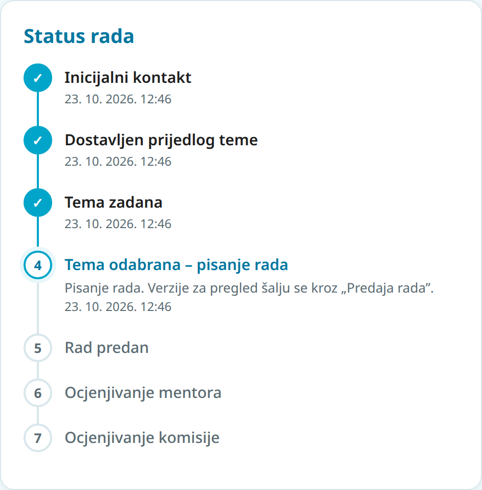
Npr. ako konačna verzija zahtijeva veće ispravke, status se može vratiti na „Tema odabrana – pisanje rada”. O svakoj takvoj promjeni dobivate email s napomenom mentora.
Prije slanja prijedloga dogovorite temu s mentorom (konzultacije ili email). Službeni postupak opisan je na stranici fakulteta Teme završnih i diplomskih radova.
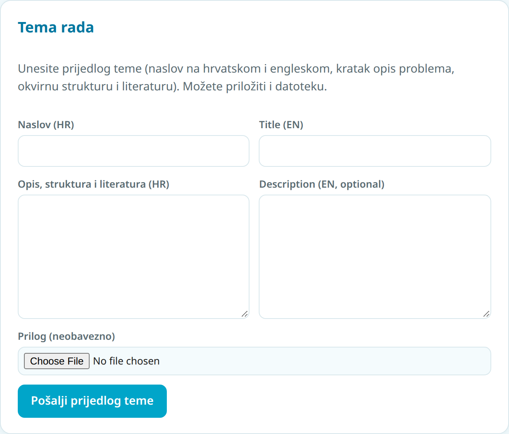
Dok mentor ne zada temu, prijedlog možete izmijeniti i ponovno poslati (gumb Pošalji izmijenjeni prijedlog).
Kad mentor zada temu, dobit ćete email, a status postaje Tema zadana. Na kartici Moj rad vidite konačni naslov i opis teme. Prekidačem Hrvatski / English birate jezik prikaza.
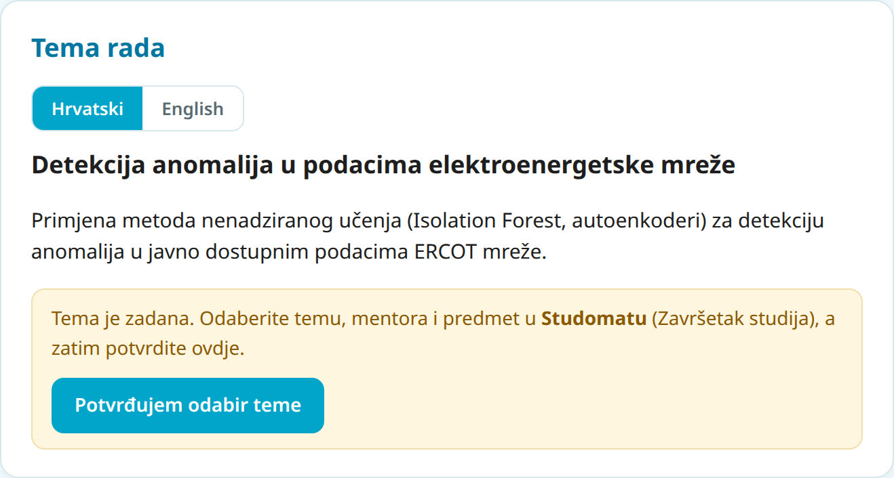
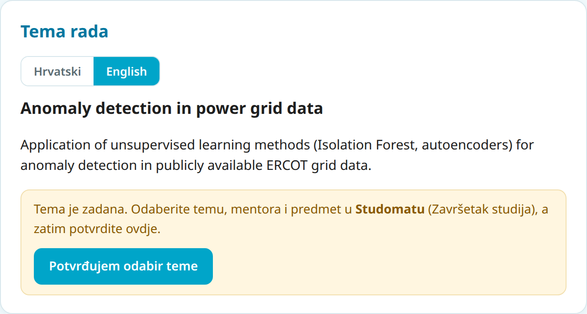
Studomat mentoru ne šalje obavijest o Vašem odabiru, a mentor ga mora potvrditi u Nastavničkom portalu. Klik na „Potvrđujem odabir teme” mentoru šalje email da može potvrditi odabir. Ako je rok za odabir u Studomatu prošao, javite se mentoru – temu tada prijavljuje preko Ureda za studente (USOP).
Upute za Studomat: wiki.srce.hr – Završetak studija (Studomat).
Rad pišite u službenom predlošku. Na kartici Predlošci i materijali nalaze se:
Ispod predložaka su materijali: neke mentor dodaje za sve studente (npr. upute za citiranje), a neke samo za Vas (oznaka Za Vas) – npr. literaturu ili podatke za Vašu temu. Ako Vam nešto treba, javite se mentoru; o svakom novom individualnom materijalu dobit ćete email.
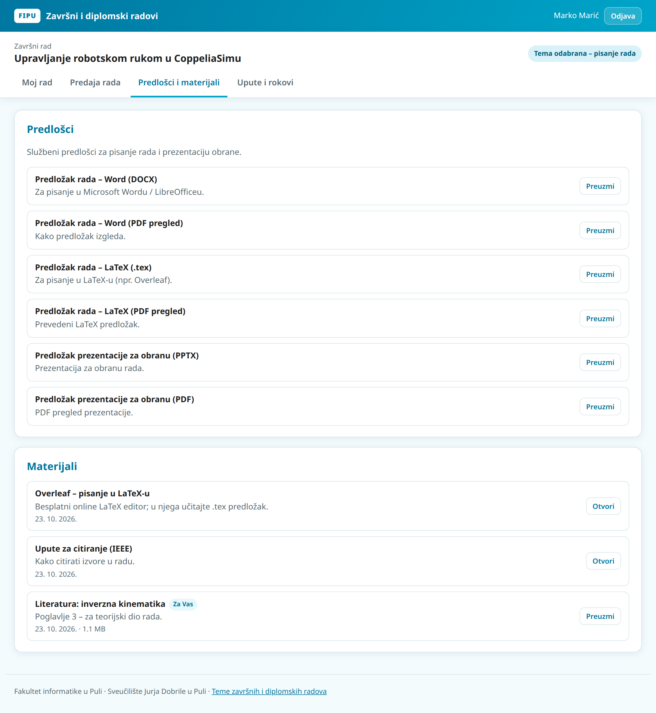
Na kartici Predaja rada šaljete datoteke mentoru. Postoje dvije vrste predaje:
| Vrsta | Kada | Što se događa |
|---|---|---|
| Verzija za pregled | Tijekom pisanja – dio rada (npr. poglavlje) ili cijeli rad za komentare. | Mentor dobiva email. Status se ne mijenja. |
| Konačna verzija | Kad je rad gotov i spreman za ocjenjivanje. | Status postaje Rad predan, mentor dobiva email. |
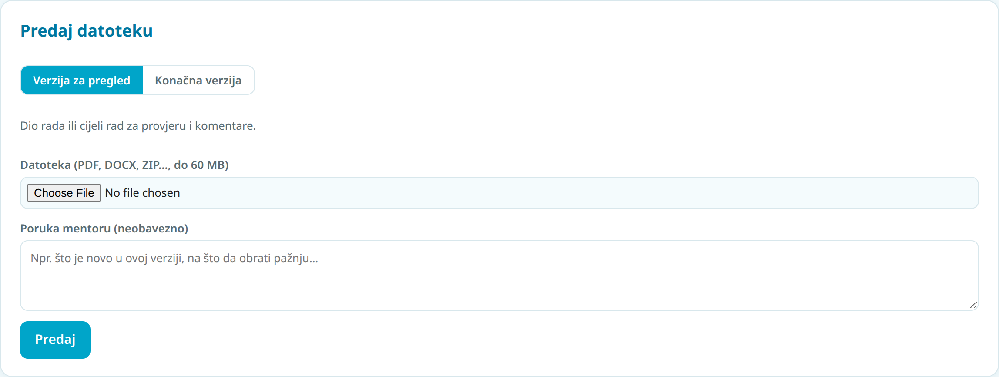
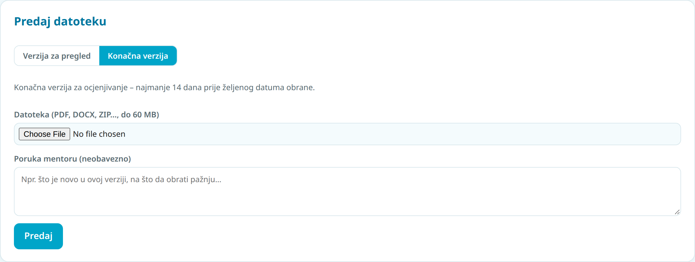
Ne čekajte kraj – šaljite rad po dijelovima (npr. poglavlje po poglavlje). Ranije povratne informacije znače manje ispravaka na kraju. Konačnu verziju nije moguće predati prije nego što je tema odabrana.
Ispod obrasca je popis Moje predaje. Uz svaku predaju vidite datum, veličinu, svoju poruku i – kad je mentor pregleda – povratnu informaciju u plavom okviru: komentar i/ili datoteku s komentarima (klik na 📎 ime datoteke je preuzima). Dok mentor ne pregleda predaju, piše „Čeka pregled mentora”. O svakoj povratnoj informaciji dobivate email.
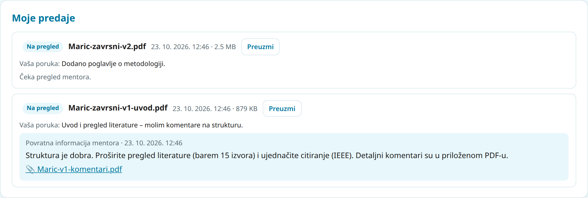
Imajte na umu: ovisno o kvaliteti i stanju rada te o temi, pregled može trajati i dulje, a često je potrebno više krugova ispravaka. Dva tjedna su minimum, a ne preporuka – planirajte ranije.
U okviru Podaci na kartici Moj rad unesite JMBAG i željeni datum obrane te kliknite Spremi. Aplikacija tada izračunava i prikazuje krajnji datum za predaju konačne verzije. Ako je do obrane ostalo manje od 14 dana, prikazuje se crveno upozorenje.
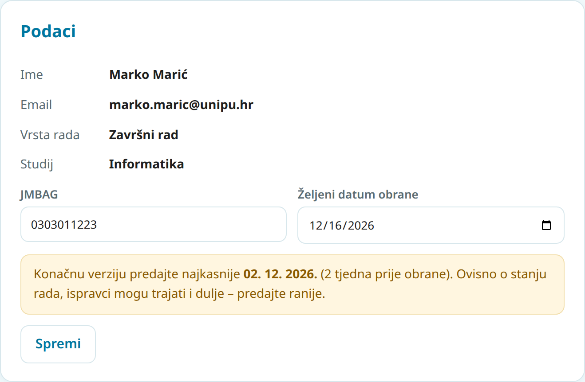
Na kartici Upute i rokovi mentor objavljuje rokove (npr. ispitne rokove obrana i krajnje datume predaje). Prošli rokovi prikazani su blijedo.
Nakon predaje konačne verzije mentor pregledava rad. Ako su potrebni ispravci, dobit ćete povratnu informaciju i rad se može vratiti u fazu pisanja. Kad je rad prihvaćen, status postaje Ocjenjivanje mentora, a zatim Ocjenjivanje komisije.
Prezentaciju za obranu pripremite u predlošku za obranu (kartica Predlošci i materijali). Datum i ostale detalje obrane dogovarate s mentorom i Uredom za studente.
Sve iz ovih uputa ukratko je dostupno i u samoj aplikaciji:
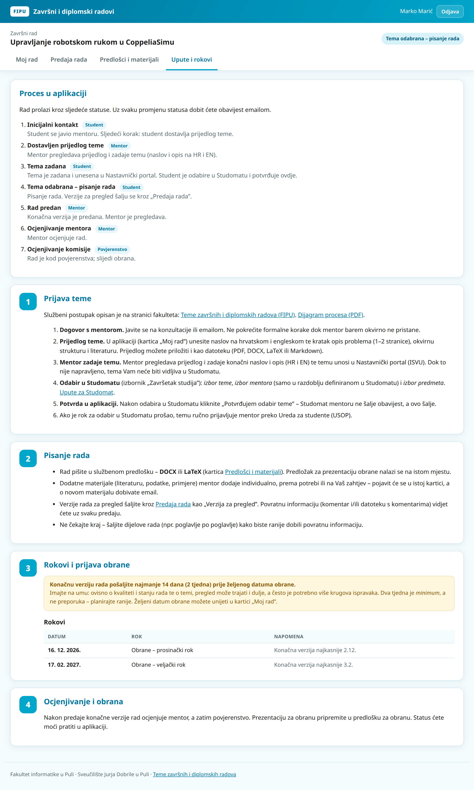
Na svoju @unipu.hr adresu dobivate email kada:
| Događaj | Naslov maila |
|---|---|
| Mentor zada (ili izmijeni) temu | Zadana je tema Vašeg rada |
| Mentor promijeni status rada | Status rada: … |
| Mentor ostavi povratnu informaciju na predaju | Povratna informacija: ime-datoteke |
| Mentor doda materijal samo za Vas | Novi materijal: … |
| Mentor Vam pošalje poruku | Nova poruka mentora |
Mentor dobiva email kada pošaljete prijedlog teme, potvrdite odabir teme ili predate datoteku – ne morate mu dodatno pisati da ste nešto predali.
Provjerite mapu neželjene pošte (Spam) i označite poruke kao „Nije spam”.
Mentor: Sandi Baressi Šegota · sbaressis@unipu.hr
Ured za studente FIPU: fipu-ured@unipu.hr, +385 52 877 438